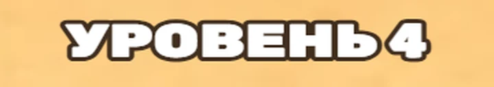
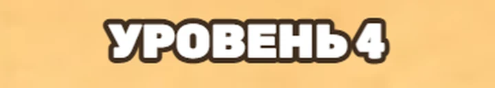
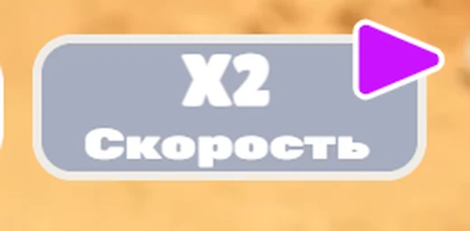
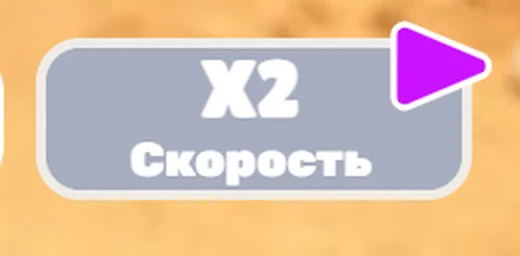
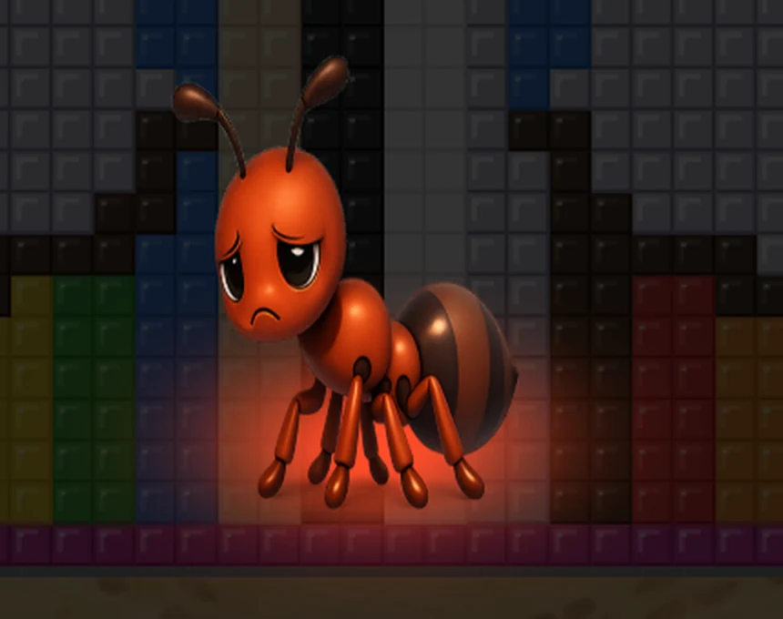
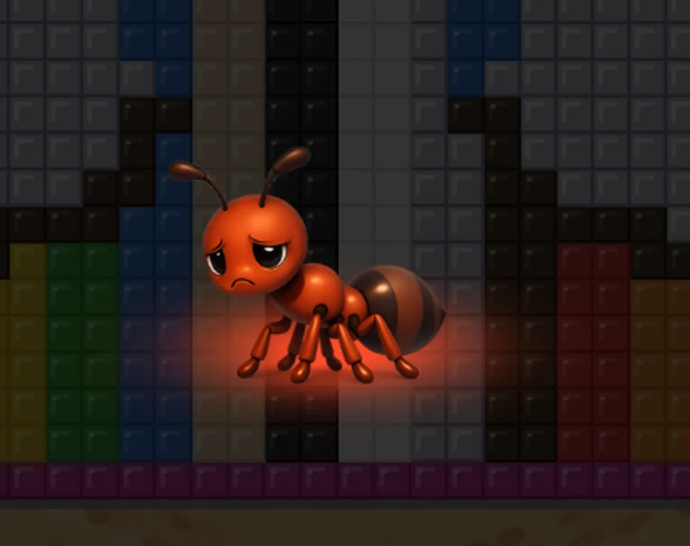
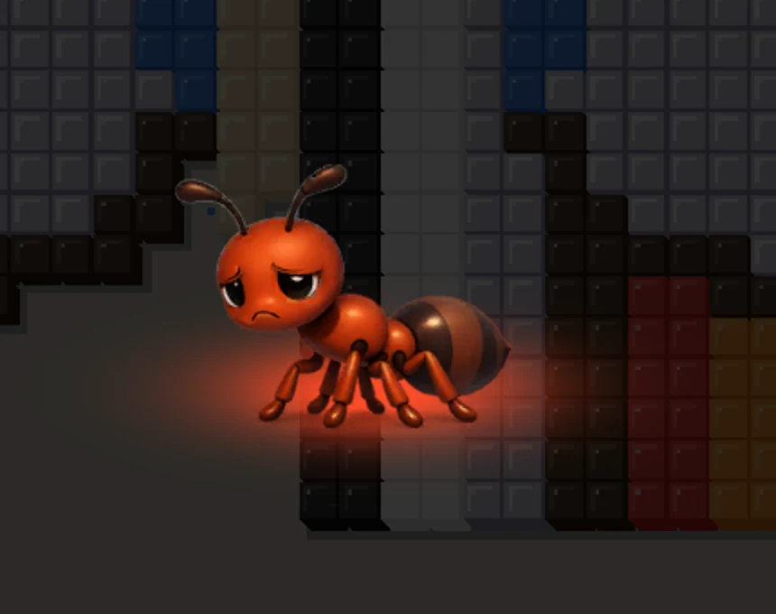
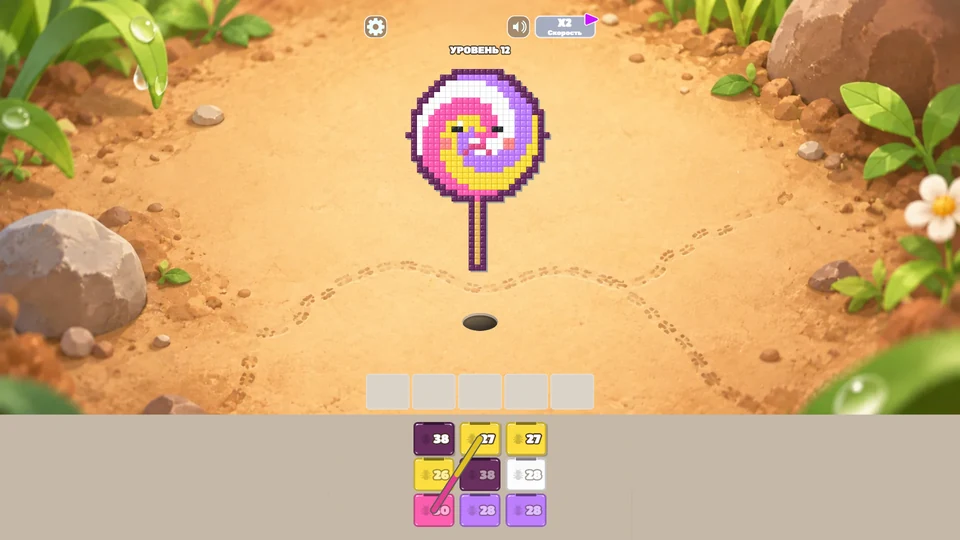

Всё снято с боевой сборки её же отрисовкой, один и тот же уровень и один и тот же момент. Отличается только правка.
«надпись "уровень" немного сплюснута» · «После применения x2 скорости "скорость" сплющена на кнопке»




| строка | натурально | рисовалось |
|---|---|---|
| УРОВЕНЬ 4 | 203 px | 265 px |
| Скорость | 122 px | 159 px |
Английский кадр и все цифры не тронуты: растяжение осталось у латиницы и у цифр, где оно измерено по оригиналу.
«у проваленного уровня картинка муравья сплюснута»



Картинка муравья — лист 1024×512, рисовался в коробку 420×322. Размер теперь взят с кадра оригинала: высота совпала в 148 px против 146.
«эта серая полоса не очень выглядит, можно просто фон растянуть и полосу убрать»

Правки 1 и 2 уже в сборке и закрыты проверками. Вариант полосы поставлю тот, который выберешь.